Поддержка Fidelio и Suite8
Диагностика ошибок, восстановление работоспособности, настройка системы, консультации пользователей и сопровождение гостиничных процессов.
Fidelio V8 / Oracle Hospitality Suite8
Поддержка, интеграции, веб-модули, отчётность и автоматизация — без полной замены вашей PMS.
Fidelio V8 · Suite8 · Oracle · Интеграции · Web & Mobile · AI и аналитика
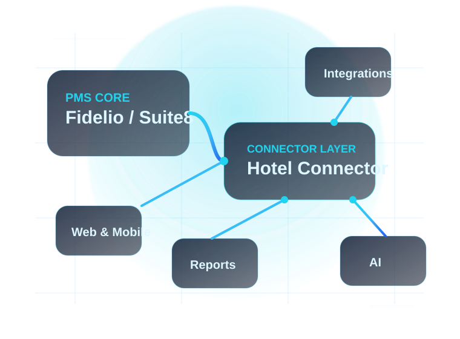
Чем мы занимаемся
От устранения отдельной ошибки до разработки новой системы, интегрированной с инфраструктурой отеля.
Диагностика ошибок, восстановление работоспособности, настройка системы, консультации пользователей и сопровождение гостиничных процессов.
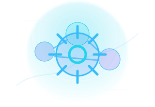
Создание дополнительной бизнес-логики, автоматизация операций и расширение стандартных возможностей PMS под требования конкретного отеля.
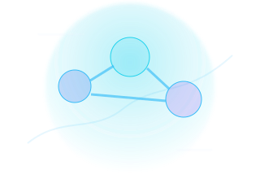
Обмен данными с системами бронирования, платёжными сервисами, электронными замками, POS-системами, CRM, сервисами уведомлений и другими внешними решениями.
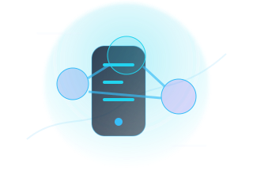
Мобильные и браузерные рабочие места для сотрудников и руководителей: бронирования, housekeeping, карточки гостей, задачи, услуги и контроль операций.
Новые отчёты, управленческие панели, автоматические сводки, поиск по гостиничным данным и AI-инструменты для руководства и сотрудников.
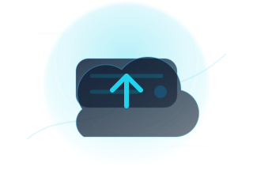
Работа с Oracle Database, производительностью, миграциями, резервным копированием, восстановлением данных, Docker-сервисами и локальной инфраструктурой отеля.
Готовые направления
Показываем понятные сценарии модернизации без длинного каталога и без остановки привычной работы отеля.
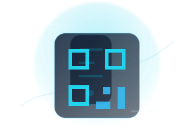
Digital IDСканирование QR-кода, получение данных документа и автоматическое заполнение карточки гостя в Fidelio / Suite8.
Открыть калькулятор стоимости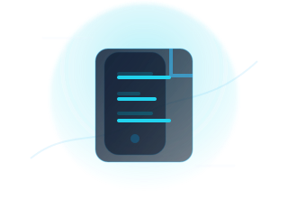
Front OfficeРаспознавание документов, заполнение данных гостя, проверка полей и сохранение изображений в соответствии с процессами отеля.
Персональная веб-страница бронирования: оплата, загрузка документов, заказ дополнительных услуг и передача предпочтений.
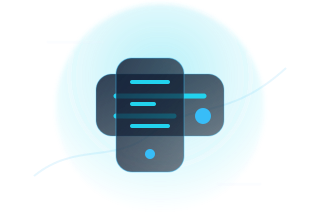
Suite8 UIСовременные браузерные и мобильные интерфейсы поверх существующей PMS без сложной миграции и остановки работы отеля.
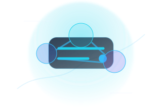
Data exchangeПодключение внешних решений через API, файловый обмен, локальные агенты, базы данных, облачные сервисы, оборудование и нестандартные протоколы.
Отчётность для экрана и печати, ежедневные показатели, загрузка, продажи, выручка, операции и контроль ключевых KPI.
Автоматические резервные копии, контроль выполнения, уведомления об ошибках и помощь с восстановлением.
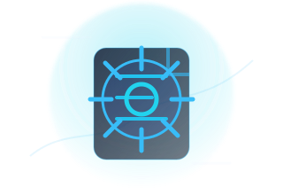
CustomЕсли готового решения нет, Fidelio Pro проектирует и разрабатывает его под процессы конкретного отеля.
Главное преимущество
Многие гостиничные системы надёжно работают годами, но их интерфейсы, отчёты и возможности интеграции уже не соответствуют современным требованиям.
Fidelio Pro добавляет к существующей PMS новые веб-интерфейсы, интеграции, автоматизацию и аналитику. Отель сохраняет привычные процессы и данные, но получает современные инструменты для сотрудников, гостей и руководства.
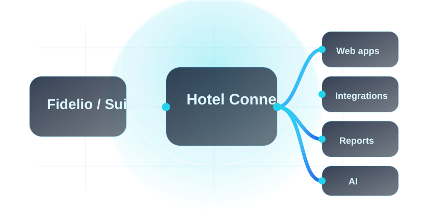
Почему Fidelio Pro
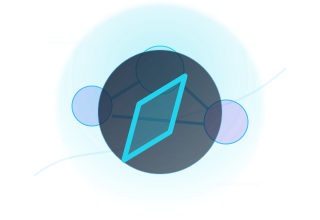
Понимаем работу службы приёма, бронирования, бухгалтерии, ресторанов, housekeeping и IT-службы отеля.
Учитываем реальные версии PMS, Oracle, рабочие станции, локальные серверы и уже подключённые интерфейсы.
Сначала определяем проблему, затем предлагаем технически и экономически разумное решение.
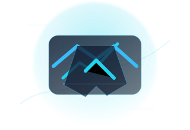
Помогаем с внедрением, тестированием, обучением, исправлениями и дальнейшим развитием решения.
Процесс
Двигаемся короткими понятными этапами: от изучения задачи до поддержки после запуска.
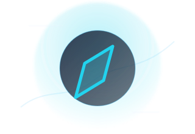
01Уточняем текущую конфигурацию, ограничения и желаемый результат.
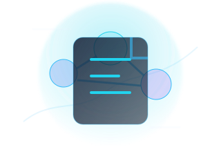
02Формируем архитектуру, состав работ, стоимость и этапы внедрения.
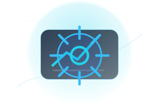
03Создаём решение и проверяем его на тестовом контуре или ограниченной группе пользователей.
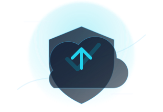
04Внедряем решение в рабочую среду и сопровождаем его дальнейшую эксплуатацию.
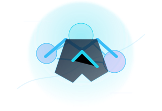
Для технологических партнёров
Помогаем разработчикам, производителям оборудования и поставщикам гостиничных сервисов подключить свои продукты к Fidelio V8 / Suite8 и другим элементам IT-инфраструктуры отеля.
Работаем с API, файловым обменом, базами данных, локальными агентами, облачными сервисами, оборудованием и нестандартными протоколами.
Контакты
Опишите используемую систему, текущую проблему или желаемый результат. Мы изучим задачу и предложим практический вариант реализации.
Формат, время работы и условия поддержки зависят от выбранного варианта обслуживания.